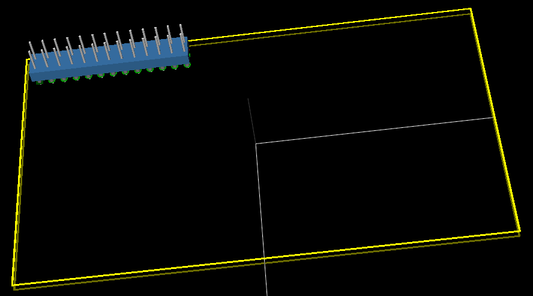

This project template is the basis of an expansion board for the Raspberry Pi $25 ARM board.
This base project includes a PCB edge defined as the same size as the Raspberry-Pi PCB with the connectors placed correctly to align the two boards. All IO present on the Raspberry-Pi board is connected to the project through the 0.1" expansion headers.
The board outline looks like the following:

(c)2012 Brian Sidebotham
(c)2012 Kicad Developers